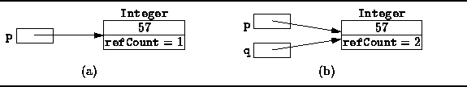
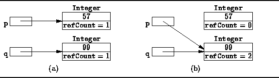

Data Structures and Algorithms
with Object-Oriented Design Patterns in Java
Data Structures and Algorithms
with Object-Oriented Design Patterns in JavaThe difficulty in garbage collection is not the actual process of collecting the garbage--it is the problem of finding the garbage in the first place. An object is considered to be garbage when no references to that object exist. But how can we tell when no references to an object exist?
A simple expedient is to keep track in each object of the total number of references to that object. That is, we add a special field to each object called a reference count . The idea is that the reference count field is not accessible to the Java program. Instead, the reference count field is updated by the Java virtual machine itself.
Consider the statement
Object p = new Integer (57);which creates a new instance of the Integer class. Only a single variable, p, refers to the object. Thus, its reference count should be one.

Figure: Objects with reference counters.
Now consider the following sequence of statements:
Object p = new Integer (57); Object q = p;This sequence creates a single Integer instance. Both p and q refer to the same object. Therefore, its reference count should be two.
In general, every time one reference variable is assigned to another, it may be necessary to update several reference counts. Suppose p and q are both reference variables. The assignment
p = q;would be implemented by the Java virtual machine as follows:
if (p != q)
{
if (p != null)
--p.refCount;
p = q;
if (p != null)
++p.refCount;
}
For example suppose p and q are initialized as follows:
Object p = new Integer (57); Object q = new Integer (99);As shown in Figure
 (a),
two Integer objects are created,
each with a reference count of one.
Now, suppose we assign q to p
using the code sequence given above.
Figure (b) shows that after the assignment,
both p and q refer to the same object--its reference count is two.
And the reference count on Integer(57) has gone to zero
which indicates that it is garbage.
(a),
two Integer objects are created,
each with a reference count of one.
Now, suppose we assign q to p
using the code sequence given above.
Figure (b) shows that after the assignment,
both p and q refer to the same object--its reference count is two.
And the reference count on Integer(57) has gone to zero
which indicates that it is garbage.

Figure: Reference counts before and after the assignment p = q.
The costs of using reference counts are twofold: First, every object requires the special reference count field. Typically, this means an extra word of storage must be allocated in each object. Second, every time one reference is assigned to another, the reference counts must be adjusted as above. This increases significantly the time taken by assignment statements.
The advantage of using reference counts is that garbage is easily identified. When it becomes necessary to reclaim the storage from unused objects, the garbage collector needs only to examine the reference count fields of all the objects that have been created by the program. If the reference count is zero, the object is garbage.
It is not necessary to wait until there is insufficient memory before initiating the garbage collection process. We can reclaim memory used by an object immediately when its reference goes to zero. Consider what happens if we implement the Java assignment p = q in the Java virtual machine as follows:
if (p != q)
{
if (p != null)
if (--p.refCount == 0)
heap.release (p);
p = q;
if (p != null)
++p.refCount;
}
Notice that the release method is invoked immediately
when the reference count of an object goes to zero,
i.e., when it becomes garbage.
In this way, garbage may be collected incrementally as it is created.
 Copyright © 1998 by Bruno R. Preiss, P.Eng. All rights reserved.
Copyright © 1998 by Bruno R. Preiss, P.Eng. All rights reserved.